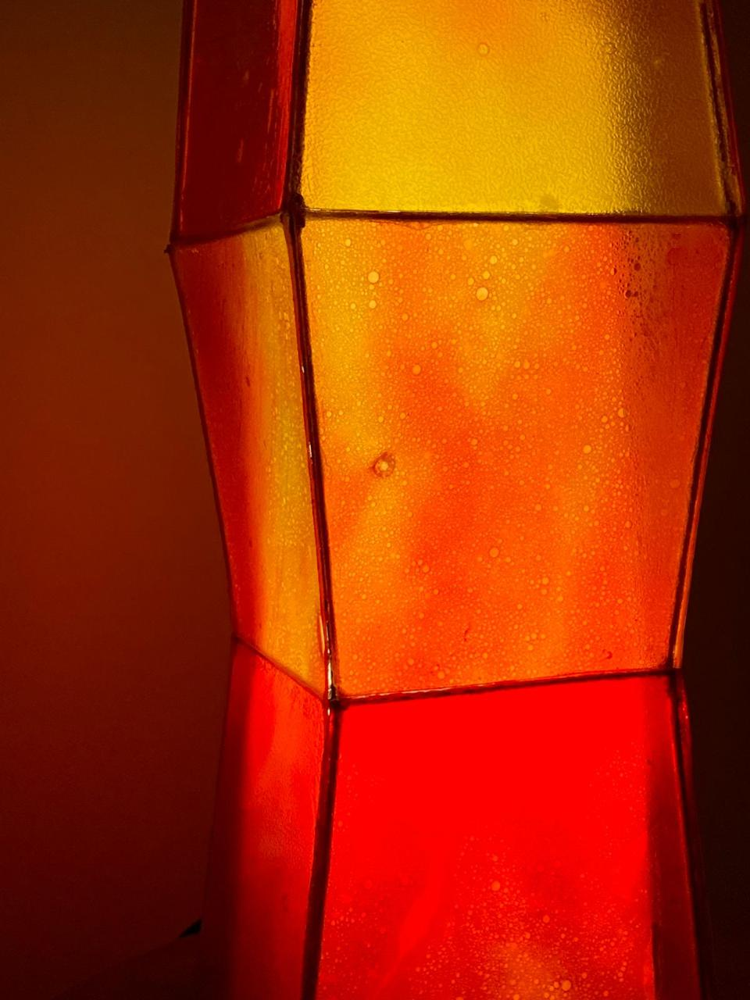
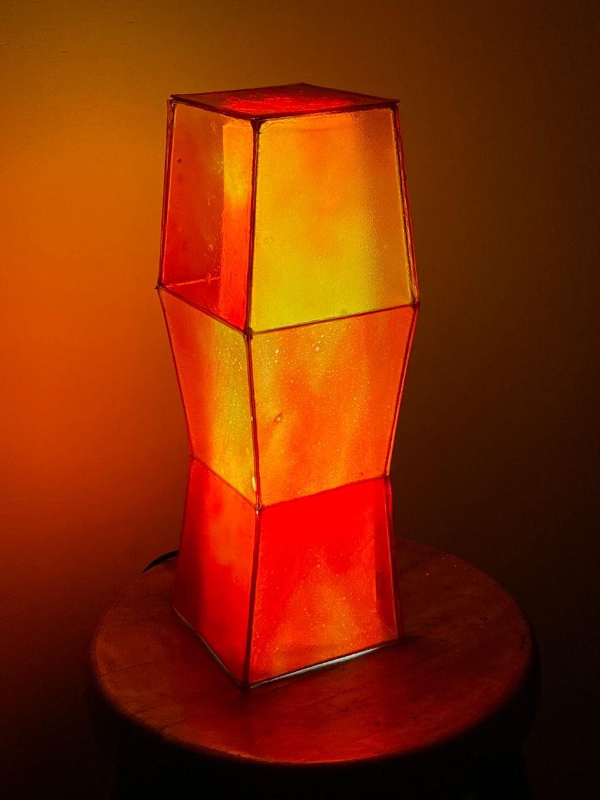

Igneo
Una luminaria liviana hecha con un bioplástico biodegradable que probamos como material. Las láminas se tensan sobre una estructura de alambre y sus texturas generan distintas opacidades, con las que se juega con la luz para lograr una iluminación suave y cálida.
- Año
- 2025
- Disciplina
- Diseño industrial
- Rol
- Trabajo en dupla
- Herramientas
- Bioplástico


